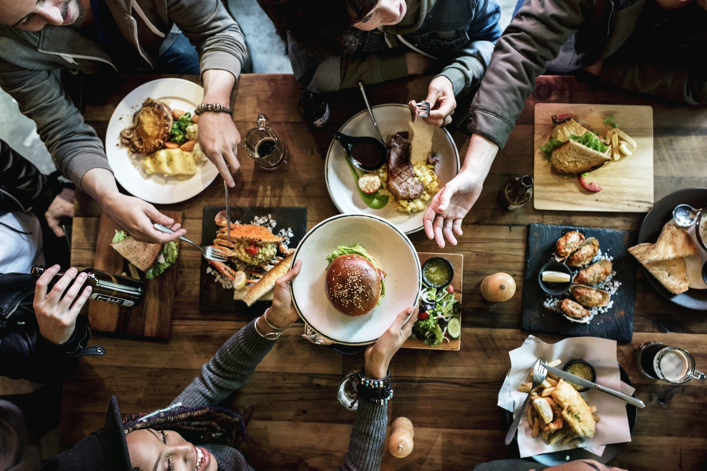
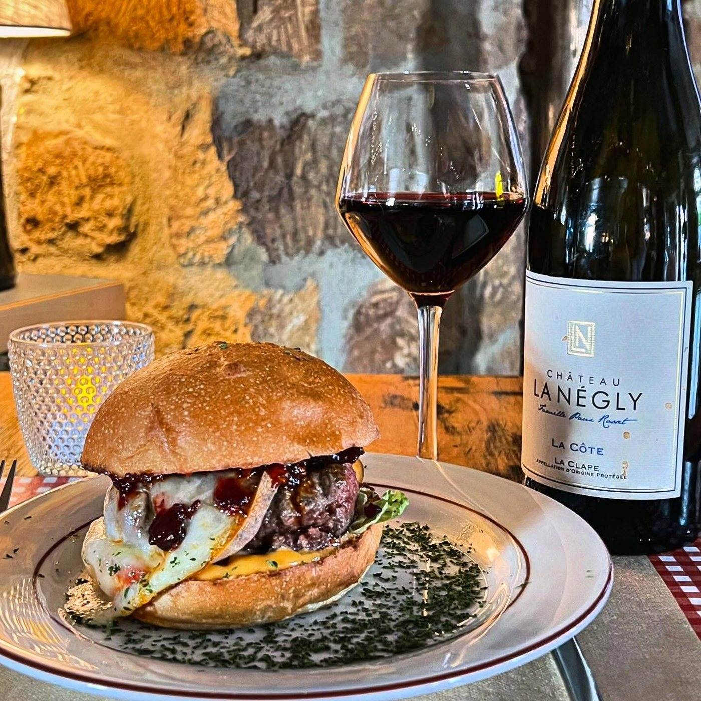
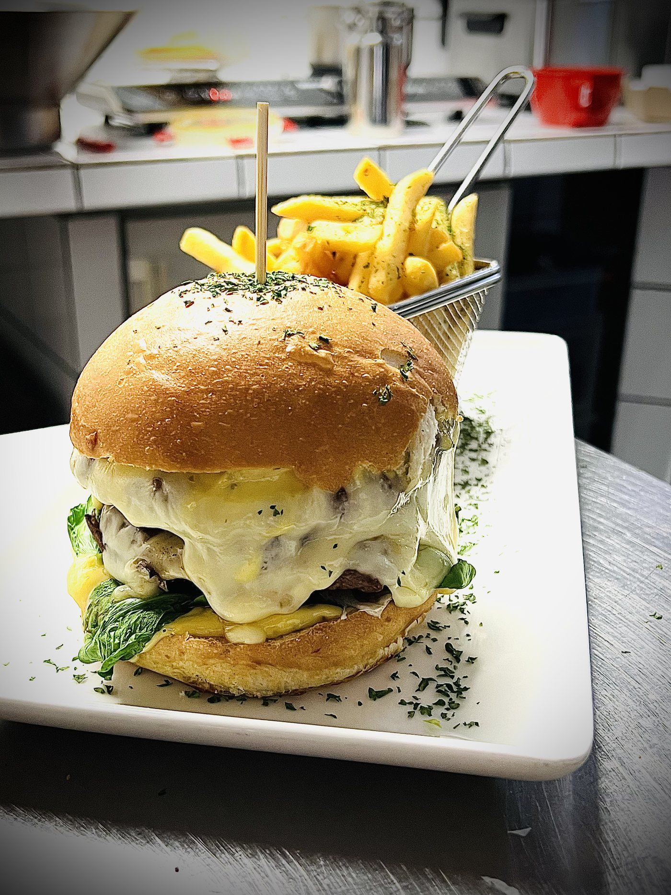
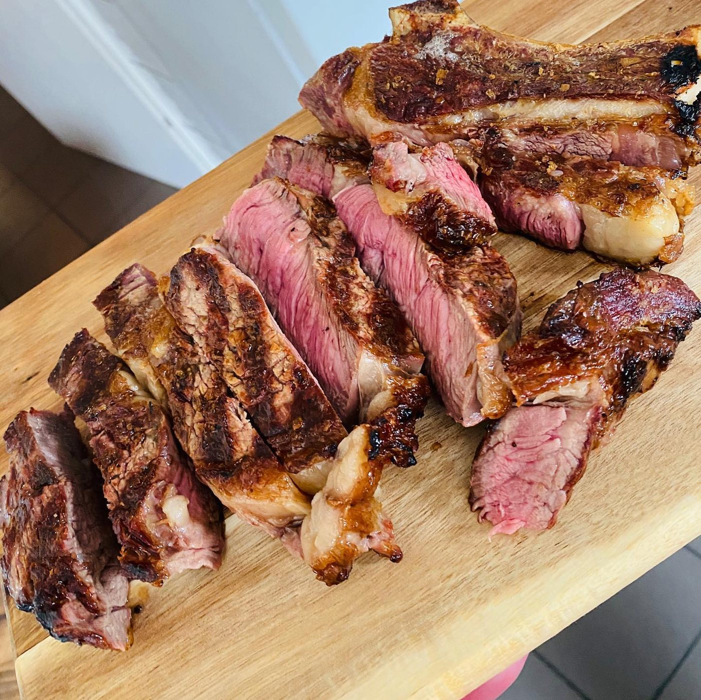
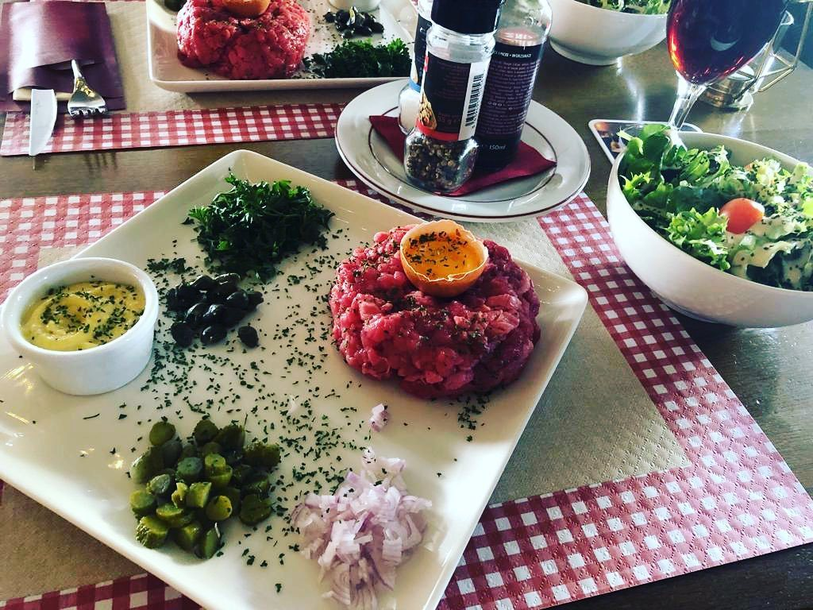
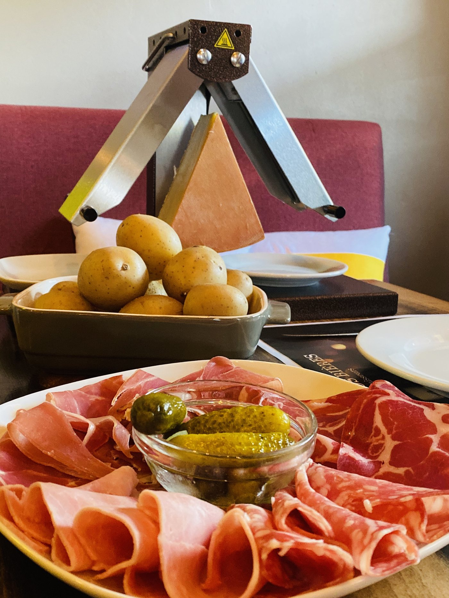
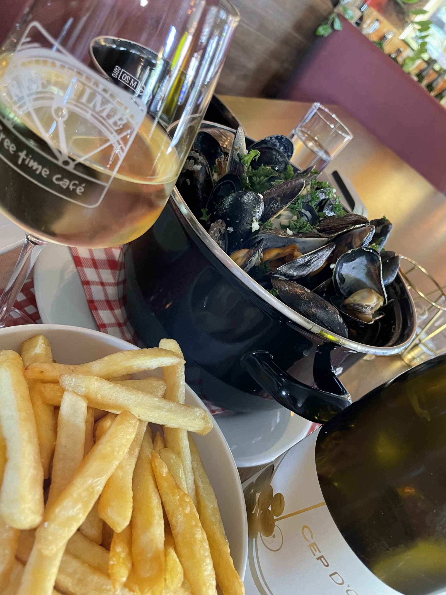
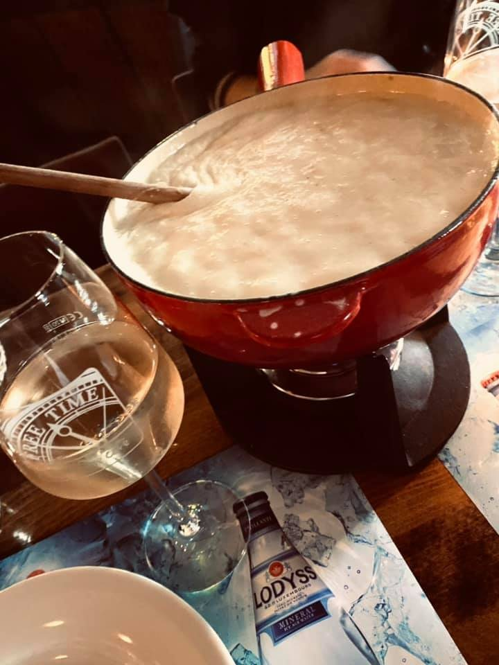
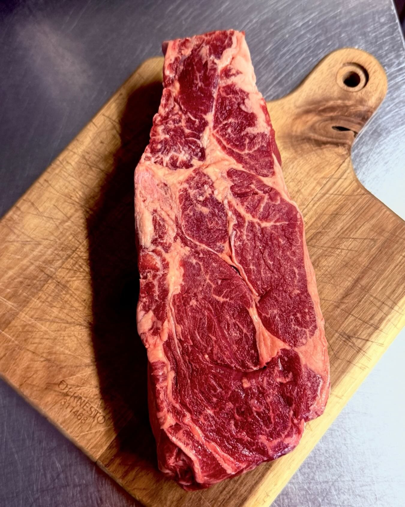

Belvaux · Brasserie & bar à vin
« The Gin&Tonic Place To Be »— leur enseigne, Free Time Café
Une brasserie généreuse au cœur de Belvaux, réputée pour ses gourmet burgers et sa cuisine française & luxembourgeoise — dans un décor inspiré du patrimoine sidérurgique du Sud.
Le nom donne le ton
Du café du matin au dernier verre — la maison ouvre tôt et ferme tard, tous les jours de la semaine.
Burgers, plats du jour et pâtes.
Le Gin&Tonic Place To Be — vins, bières et cocktails.
Viandes, fondues et tartes flambées, en salle ou en terrasse.
Ouvert jusqu'à 1h du matin le samedi.
La maison
« Nous vous accueillons dans une brasserie authentique, au décor élégant inspiré du patrimoine sidérurgique, offrant une atmosphère chaleureuse et conviviale. » — freetimecafe.lu, « À propos »
Pierres apparentes, guirlandes lumineuses, nappes à carreaux rouges et tables dressées à la bougie : le décor de la maison regarde vers l'ancien bassin minier de Belvaux et Sanem, sans jouer les nostalgiques — on y vient surtout pour partager un repas, un verre, une soirée de match.
La maison est réputée pour ses Gourmet Burgers, mais met tout autant à l'honneur une cuisine française et luxembourgeoise généreuse : pièce de bœuf, filet de cheval, cordon bleu de veau, escargots de Bourgogne, Wäinzoossiss et Kuddelfleck.

Bœuf — et autruche — exclusivement d'éleveurs luxembourgeois, selon la carte de la maison. Servis avec frites fraîches.


Carte non-contractuelle, sous réserve de modification. Double bœuf ou fromage supplémentaire disponibles, supplément à confirmer.
La carte
Planchas, tartes flambées, viandes et pâtes — la cuisine française et luxembourgeoise de la maison, à partager ou pour soi.
« Merci de bien vouloir réserver la veille. » — note de la maison



Photos réelles de la maison, publiées sur freetimecafe.lu — 2026.



Infos pratiques
Fondue & raclette : merci de réserver la veille.